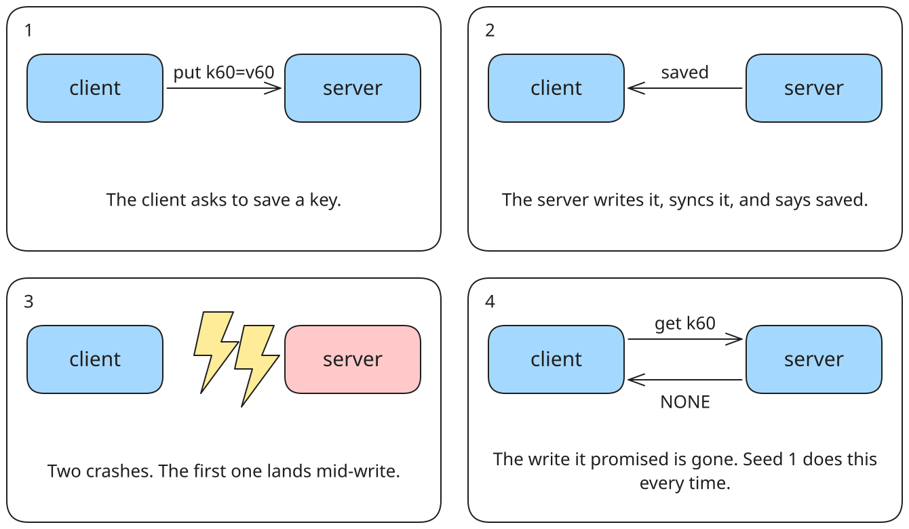

seedfall: crash testing for Go services
Deterministic simulation testing on the stock Go toolchain
CodeDocsDemoReal traceBugs foundRL gym
Abstract. Storage code loses acknowledged writes when it crashes at the wrong moment, and that moment is almost impossible to hit in a test or to reproduce after production hits it. seedfall runs unmodified Go services in a deterministic simulation on WebAssembly, injects crashes, torn writes and network faults, and names every run by one seed, so each failure replays byte for byte. A shrinker cuts the failure to the few faults that cause it. It has found crash bugs in 10 open-source Go storage projects. Because a seed is a reproducible test case, the same machinery also works as a grader for coding agents and for agents operating a live cluster. A 1.7B model trained against that grader went from 0.06 to 0.70 on held-out rollout scenarios, after an earlier run found a hole in the grader and had to be thrown out.
Index terms. deterministic simulation testing, fault injection, crash consistency, delta debugging, Go, WebAssembly.
go install github.com/kunalgoesbyken/seedfall/cmd/seedfall@latestIntroduction
Most storage code passes its tests and then, one day in production, loses a write it already told a client was saved. It's rarely a logic bug. It's a crash at a bad moment: halfway through a write, or right after a rename but before anyone synced the directory. Tests almost never land on that moment, and when production does, nobody can make it happen again.

I built seedfall to hit those moments on purpose, the way FoundationDB tests itself in simulation [1, 2]. It runs your Go service in a simulated world, crashes it, breaks its disk and network, and names every run with one number. Give it the same number and you get the same run, byte for byte, on any machine.
Break it yourself
Here's that bug as a toy you can click. The server appends key=value lines to a log and syncs before it says saved. Press crash mid-put, then put again, and watch the next line glue itself onto the torn one.
- Told the client "saved"
- A restart would read
- Lost
So far seedfall has found bugs like this in NATS JetStream, buntdb, hashicorp/raft and seven other storage projects.
How it works

Each node is compiled with Go's GOOS=wasip1 target and runs on wazero. On that target, everything nondeterministic leaves the program through three calls: random bytes, the clock, and sleep. seedfall answers all three itself and fakes the disk and network too, so your code keeps using plain os.File and net.
Time only moves when the scheduler says so, which makes a 10 minute timeout free. The disk keeps a write visible right away but only keeps it across a crash after fsync, and a crash can leave a torn prefix of whatever was pending [5]. The network can delay, reorder, reset and partition.
When a run breaks one of your checks, seedfall shrink replays it with fewer faults and keeps a cut only if it still fails the same way, which is delta debugging [3]. Here it is on examples/kvlog, a small key-value server that syncs before it says "saved":
$ seedfall run -c seedfall.always.json -seeds 1-100
FAIL seed 1 at t=2.891820635s (737 scheduler steps, 445ms real)
client#1: acknowledged write lost: k96=v96, server now answers "NONE"
$ seedfall shrink -c seedfall.always.json -seed 1
faults before the failure (2):
427.268ms crash server during disk op #56, restart at 761.268ms
802ms crash server, restart at 802msSeed 1 had 33 faults, and 16 runs later it's down to 2. The first crash leaves a half-written line. The server appends after it, and on the second restart it can't read the record that follows. Same bug as the toy above.
Poke at the real run. This is the shrunk seed 1, recorded by seedfall replay -html: every message, both crashes and the server's log, on one timeline you can filter and grep. Open the timeline →
What it found
I pointed it at open-source Go storage projects:
| Project | What breaks | Status |
|---|---|---|
| NATS JetStream | A crash while a stream is being created loses the stream and its acknowledged messages. | #8872, open |
| rosedblabs/wal | After one torn write, later synced writes are lost and rosedb v2 won't open. | #51, open |
| tidwall/buntdb | A crash after the automatic shrink can bring the database back empty. | #126, fixed |
| tidwall/wal | A crash mid-write makes the log unopenable, and the pending fix doesn't cover every case. | #43, open |
| hashicorp/raft | The snapshot directory is never synced before a rename, so on a strict file system a node can panic on every restart. | #744, open |
| nutsdb | Recovery can drop every acknowledged entry in a bucket, and a damaged tail makes Open fail forever. | #695 #696 #697, open |
| diskv | On a strict file system an acknowledged write can revert. | #83, open |
| bitcask | Four ways one crash leaves the database unopenable. | write-up |
| bbolt | On a strict file system one crash can lose the whole database. | write-up |
| jmsadair/raft | Four ways a crash or a clock step back leaves a node that can't restart. | write-up, repo gone private |
- Torn write at the tail6
- Missing directory fsync5
- Missing file fsync4
- Partial state blocks restart2
- Clock step back1
A strict file system is one where a created or renamed file survives a crash only once its directory is synced [4]. Not everything broke: hashicorp/raft passed 600 seeds and etcd-io/raft passed 100. I also asked Claude for a crash-safe key-value store nine times with the same prompt. All nine passed their own tests, and seedfall found two that can refuse to open forever after one specific crash.
Seeds as a grader
A seed is useful because it replays a failure exactly, and that turns out to be what you want from an agent's reward too. Running an agent's code is easy. Trusting the score is the hard part. If the agent never sees the seeds it's graded on, it can't tune its work to them, so the score says something about faults it didn't predict. Anyone can recompute the score from the submission and the seeds. And when it fails, the shrunk trace is a few events long, which an agent can actually read and act on.

seedfall-gym turns this into two environments. In one, an agent fixes a crash bug in Go storage code across 42 tasks; on every task the reference fix scores 1.0, the buggy code below 0.5 and a scripted cheat 0. In the other, a model plans a rolling upgrade of a raft cluster, and I trained one on it with GRPO. Read the gym write-up →
Operator mode
Operator mode lets an agent act on a live simulated cluster, one step at a time. It can crash, restart, pause, partition or reconfigure a node, always between two scheduler steps, and every action is logged with its virtual time. The score doesn't come from the live run. It comes from replaying that log from scratch on the episode's seed and on other seeds the caller picks.

seedfall env, which applies each action between scheduler steps and logs it. verify replays the log on other seeds to get the score.You talk to it with one JSON object per line:
{"cmd":"reset","config":"opcluster.json","seed":1}
{"cmd":"step","advance":"1s"}
{"cmd":"step","op":{"kind":"set_args","node":"n1","args":["-id","1","-version","2"]}}
{"cmd":"step","op":{"kind":"restart","node":"n1","args":["300ms"]}}
{"cmd":"verify","seeds":[2,3,4,5]}The test scenario is a 3-node etcd-io/raft key-value store with three clients, under planned crashes and partitions. The operator has to roll every node to version 2 by 12s. It fails if a node is already on version 2 before availability is measured, if client availability drops under 40% in any 2s window until the versions are checked, if a node isn't on version 2 by the deadline, or if the history isn't linearizable [6]. I wrote six action lists and ran each one on seeds 1 to 21:
- 1good21
- 2deadline-all21
- 3idle0
- 4restart-two0
- 5restart-all0
- 6early-all0
good restarts n1, n2 and n3 one at a time, 300ms down each. deadline-all restarts all three together at the deadline, 300ms down. idle does nothing and misses the version deadline. restart-two and restart-all take two or three nodes down together for 4s and break availability. early-all restarts all three at 100ms, before anything is measured.So the grader can tell a careful rolling restart apart from doing nothing, from a long outage and from acting before it measures, the same way on every seed. It can't tell it apart from deadline-all: at 40%, three nodes down for 300ms cost about as much availability as restarting the leader, and a stricter SLO fails good too. An earlier version stopped the clients at the deadline and checked the versions with nobody measuring, so any outage that started at the deadline was free. My RL training exposed it, as the next section shows. On my laptop (Intel Core i5-9300H), reset takes 53ms, a step with an action takes 6µs, and a full episode takes 6.2s. Almost all of that is the raft nodes and clients, not the environment. The full protocol is in the operator mode docs.
Training a model on it
The gym turns this scenario into a family of 77: 3 or 5 nodes, different stale nodes and versions, deadlines, SLOs, downtime limits and fault rates, split into train and held-out sets. A model gets a description of the cluster and answers with a full action plan, scored on 16 hidden seeds. I trained Qwen3-1.7B on it with GRPO and LoRA on Kaggle's free T4. The second run is the one that found the deadline hole above: every plan it wrote restarted the stale nodes at exactly the deadline. On the fixed grader, the third run learned a real rolling restart: one stale node at a time, shortest downtime, nothing near the deadline.
- 1oracle rolling restart0.786
- 2GRPO model0.703
- 3stale nodes together0.545
- 4base model0.058
Limits
- Your code has to build for
GOOS=wasip1, so no cgo. seedfall only catches what you check for, and it isn't a race detector. - It's Go only, and it models a few file systems, not all of them. Big programs are slow to boot.
- An operator-mode action list replays at fixed virtual times, so it can't react to what a different seed does. One episode runs at a time per process.
- Operator mode has one scenario, a rolling upgrade, in the public example and 77 generated variants of it in the gym. It shows the grading works and can be trained against. It isn't a benchmark of agents yet.
References
- J. Zhou et al. FoundationDB: A Distributed Unbundled Transactional Key Value Store. SIGMOD 2021.
- W. Wilson. Testing Distributed Systems w/ Deterministic Simulation. Strange Loop 2014.
- A. Zeller and R. Hildebrandt. Simplifying and Isolating Failure-Inducing Input. IEEE TSE 28(2), 2002.
- T. S. Pillai et al. All File Systems Are Not Created Equal: On the Complexity of Crafting Crash-Consistent Applications. OSDI 2014.
- A. Rebello et al. Can Applications Recover from fsync Failures? USENIX ATC 2020.
- M. Herlihy and J. Wing. Linearizability: A Correctness Condition for Concurrent Objects. ACM TOPLAS 12(3), 1990.
- Jepsen, Antithesis, TigerBeetle VOPR and gosim: the testing tools seedfall learned from.
GitHub (Apache-2.0) · Getting started · How it works · Findings · All docs